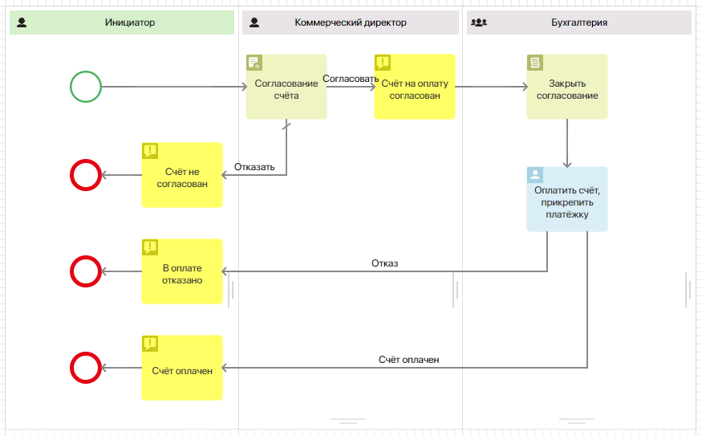
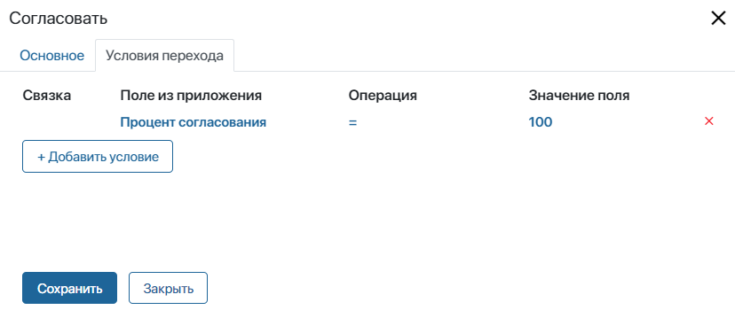
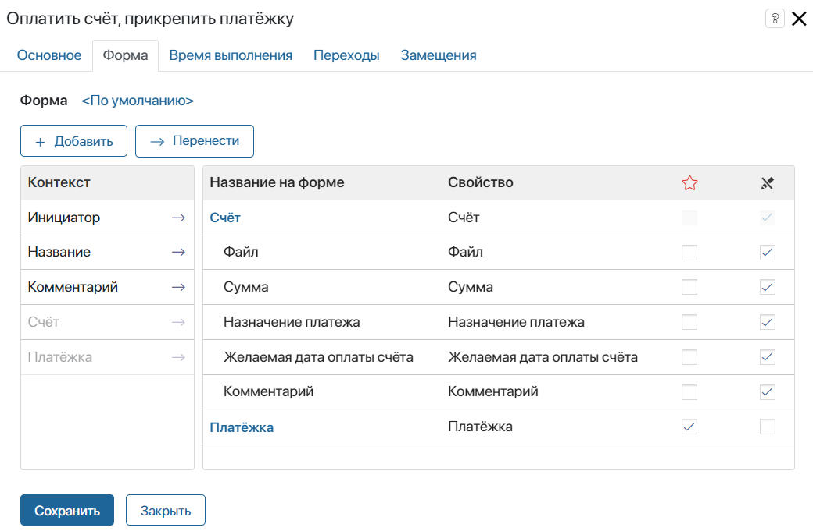
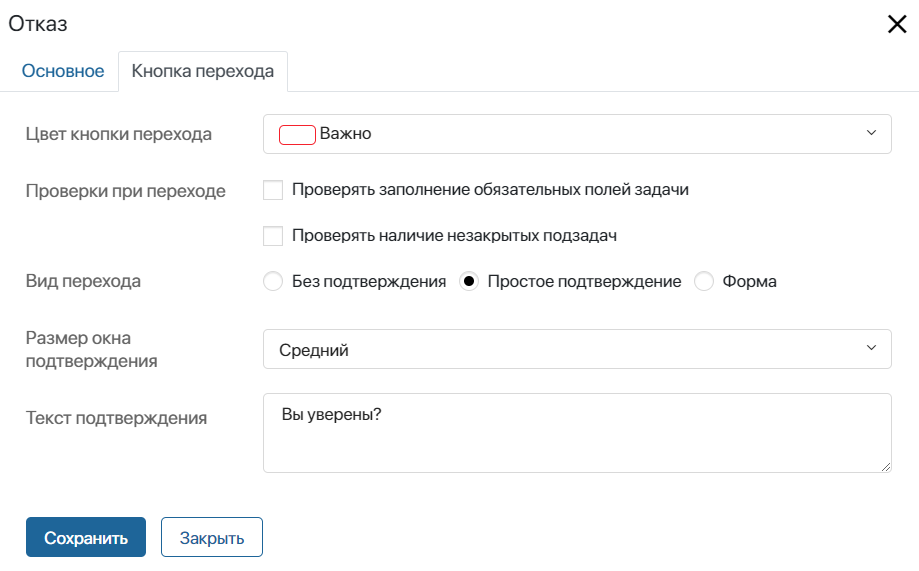

Маршрутом называют все этапы обработки документа. Любой маршрут можно автоматизировать при помощи бизнес-процесса. Это позволит чётко обозначить ответственных за каждый этап, ограничить сроки выполнения задач и контролировать ход работ.
Как правило, маршрут привязывается к определённому типу документов. Документы одного типа создаются и хранятся в приложениях. В свою очередь, приложения, связанные одной тематикой, группируются в разделы.
Например, в разделе Платёжные документы удобно хранить такие приложения, как Счета, Акты об оказании услуг, Товарные накладные, Платёжные поручения, Авансовые отчёты и т. д. Для каждого приложения можно настроить свой индивидуальный маршрут.
Графические элементы для настройки маршрута
Вы можете сформировать пакет документов из файлов, хранящихся в разных приложениях, и настроить для него собственный маршрут. Например, можно создать пакет документов, в который войдут договор, дополнительное соглашение, акт выполненных работ, счёт и т. д., а затем отправить пакет на согласование или ознакомление. Подробнее об этом читайте в статье «Формирование пакета».
Кроме того, для обработки документов в ходе бизнес-процесса можно использовать следующие специальные графические элементы: Генерация по шаблону, Генерация по файлу, Конвертация файла в PDF, Наложение водяных знаков, Ознакомление, Согласование, Закрыть согласование, Регистрация документа.
Если вы настроили интеграцию с сервисом Диадок для обмена документами с контрагентами, то можете использовать блоки:
- предустановленного модуля Диадок — Загрузка печатной формы, Отказать в подписи, Отправить документ, Подписать;
Для подписания документов вы можете предоставлять пользователям сертификаты усиленной неквалифицированной электронной подписи (УНЭП) в ходе процесса. Для этого совместно используются блоки Заявка на выпуск УНЭП и Ожидание выпуска УНЭП.
Пример настройки маршрута
Предположим, на форме создания счёта сотрудник заполняет данные: сумму, дату оплаты, назначение платежа и т. д. После сохранения счёт отправляется на согласование коммерческому директору, затем на оплату в бухгалтерию.
Рассмотрим, как настроить такой маршрут.
Шаг 1. Создать документ
Перейдите в раздел и создайте приложение типа Документ.

В открывшемся окне настройте форму приложения — добавьте поля, которые сотрудник будет заполнять при создании счёта в системе.
По умолчанию на форму вынесено поле типа Файлы для загрузки счёта. Добавьте поля Сумма типа Деньги, Назначение платежа типа Строка, Желаемая дата оплаты типа Дата/время и т. д. Укажите, какие поля являются обязательными для заполнения. Подробнее читайте в статье «Создание приложения».

После завершения настройки нажмите кнопку Сохранить.
Шаг 2. Создать бизнес-процесс
После сохранения настроек формы появится окно, с помощью которого вы можете сразу создать бизнес-процесс.
Если вы закрыли окно, перейти к созданию бизнес процесса можно, нажав напротив названия приложения значок шестерёнки и выбрав Бизнес-процессы. На открывшейся станице нажмите кнопку + Процесс. Укажите имя и код процесса.
После нажатия кнопки Создать откроется страница моделирования. Чтобы создать схему маршрута, перетаскивайте элементы с панели справа и соединяйте их стрелками-переходами.
Первый созданный бизнес-процесс будет автоматически привязан к приложению. Процесс будет запускаться для каждого созданного элемента сразу после сохранения. Подробнее читайте в статье «Бизнес-процессы на уровне приложения».
Шаг 3. Настроить схему маршрута
При построении маршрута используются графические элементы: участники обозначаются на схеме с помощью зон ответственности, этапы обработки счёта описываются с помощью блоков и соединяются переходами.
Для маршрута рассмотрения счёта можно использовать блоки согласования,закрытия согласования,оповещения и задачи. Схема будет выглядеть так:

Рассмотрим подробно, как настроить каждый элемент маршрута.
Определить ответственных за обработку документа
Добавьте зону ответственности для каждого сотрудника, который выполняет какую-либо роль в процессе. В маршруте согласования счёта принимают участие инициатор, согласующий и бухгалтер. Следовательно, необходимо создать три зоны ответственности.

Так как заранее не известно, кто именно будет отправлять счёт на согласование, инициатором процесса может стать любой сотрудник. Зоны ответственности такого типа называются динамическими и обозначаются зелёным цветом.
Коммерческий директор и бухгалтер — участники процесса, роли которых известны заранее. Такие зоны ответственности называются статическими. В настройках статических зон ответственности выберите исполнителей из организационной структуры.
Добавить задачу согласования
В блоке Согласование на вкладке Основное укажите, какой именно документ будет отправляться согласующему. В нашем примере это счёт. Он уже добавлен в выпадающий список, так как бизнес‑процесс связан с приложением Счета. Также выберите способ согласования Вручную.
Если вы хотите ограничить срок согласования, на вкладке Время выполнения укажите, сколько дней, часов или минут есть у сотрудника на выполнение задачи.
На вкладке Переходы выберите переход по умолчанию.
Указать условия согласования
Для перехода Согласовать необходимо задать условия, при которых документ будет считаться утверждённым. Дважды нажмите на стрелку на схеме, чтобы открыть настройки перехода. Перейдите на вкладку Условия перехода и задайте процент согласования равным 100.

Оповестить сотрудников о статусе документа
Для построения маршрута используется несколько блоков оповещений. Они размещаются на отрезках, где нужно проинформировать сотрудников о важных событиях в процессе.
В настройках оповещения необходимо указать название элемента на схеме и тему сообщения.
На вкладке Получатели укажите, кому нужно отправить оповещение. По умолчанию информируется тот участник процесса, в зоне ответственности которого расположен элемент. Если необходимо оповестить кого‑то ещё, нажмите кнопку Добавить и укажите нужных сотрудников.
В данном примере оповещение о согласовании должен получить инициатор процесса, а блок находится в зоне ответственности согласующего. Поэтому добавьте в список получателей контекстную переменную Инициатор.

Сформировать резолюцию по документу
Элемент Закрыть согласование используется как вспомогательный для элемента Согласование. Он размещается на отрезке, где необходимо вынести резолюцию по документу, не дожидаясь окончания бизнес-процесса.
Укажите, для какого документа необходимо закрыть согласование, и установите переключатель в положение Согласовано.
Добавить задачу оплаты счёта
Задача автоматически назначается сотруднику, в зоне ответственности которого она находится. В карточке задачи сотрудник должен видеть всю информацию, необходимую для выполнения работы или принятия решения.
Чтобы настроить карточку задачи Оплатить счёт, прикрепить платёжку, дважды нажмите на блок и перейдите на вкладку Форма. Для отображения информации о счёте, отправленном на согласование, вынесите в столбец Название на форме поле Счёт и нажмите на его название.
Откроется окно настроек поля. Перейдите на вкладку Свойства и перенесите в столбец Название на форме поля приложения: сумма, назначение, дата и т. д. Сделайте их доступными только для чтения и нажмите Сохранить.
Также добавьте в контекст процесса поле для платёжки типа Файлы и вынесите его на форму задачи.

На вкладке Время выполнения вы можете установить срок завершения задачи так же, как для блока согласования.
Настроить кнопки выполнения задачи
Переходы определяют, какие кнопки пользователь увидит на форме задачи. Подпись к переходу служит названием кнопки. В нашем примере из блока Задача выходят два перехода, поэтому бухгалтер увидит кнопки Счёт оплачен и Отказ.
Дважды нажмите на переход на схеме, чтобы изменить его настройки. На вкладке Кнопка перехода можно выбрать цвет кнопки, настроить проверку данных или добавить подтверждение действия.
Например, для кнопки Отказ отключите проверку обязательных полей, чтобы бухгалтер мог завершить задачу без прикрепления платёжки. Также добавьте подтверждение.

Шаг 4. Опубликовать настроенный процесс
Нажмите на верхней панели дизайнера бизнес-процессов кнопку Опубликовать.
При публикации схема маршрута проверяется. Если в процессе есть ошибки, внизу страницы появится окно с предупреждением. Некритичные ошибки не препятствуют публикации процесса.
Шаг 5. Запустить маршрут обработки
Чтобы запустить маршрут, выйдите из дизайнера бизнес-процессов, перейдите в приложение Счета и добавьте новый счёт. Для этого в правом верхнем углу страницы приложения нажмите на кнопку + Счёт. Откроется форма создания.
Заполните данные и нажмите Сохранить.
На странице приложения появится карточка счёта. Открыв её, можно увидеть данные счёта, лист согласования и назначенные пользователям задачи.
По счёту автоматически запустится маршрут рассмотрения, и коммерческому директору будет назначена задача согласования.
Движение документов по маршруту можно отслеживать при помощи статусов. Подробнее об этом читайте в статье «Статусы документов как инструмент контроля».